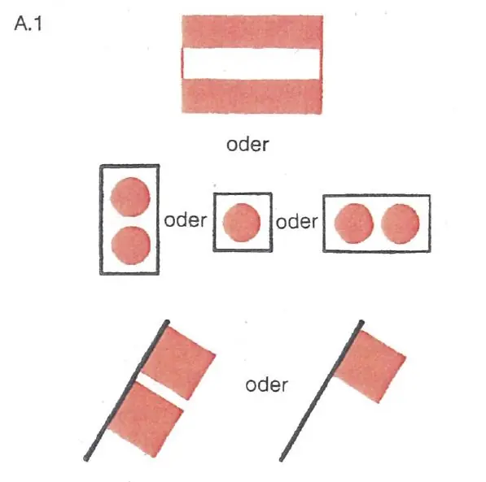

§ 9.02 Großer Elsässischer Kanal und kanalisierter Rhein
Rheinschiffahrtspolizeiverordnung
1. | Dieser Paragraph gilt für die gesamte Strecke zwischen km 173,55 (Beginn der Umleitung der Stauhaltung Kembs) und km 335,70 (Rückführung der Stauhaltung Iffezheim), einschließlich des Seitenkanals zwischen km 173,55 und km 226,54 (Rückführung der Stauhaltung Vogelgrün) und der Umleitungen des kanalisierten Rheins in Marckolsheim, Rhinau, Gerstheim und Straßburg. | |
2. | Die §§ 6.04 und 6.05 sind auf den vorgenannten Strecken nicht anwendbar. | |
3. | Beim Begegnen müssen alle Fahrzeuge die rechte Seite einhalten, soweit dies für die gefahrlose Vorbeifahrt Backbord an Backbord notwendig ist. | |
4. | Abweichend von den Nummern 2 und 3 können Fahrzeuge im Nahbereich der Schleusen verlangen, daß die Vorbeifahrt nach den §§ 6.04 und 6.05 Steuerbord an Steuerbord stattfindet; sie dürfen dies jedoch nur, nachdem sie sich vergewissert haben, daß ihrem Verlangen ohne Gefahr entsprochen werden kann. | |
Dieselben Bestimmungen gelten außerdem für Kanalpenichen (Länge 38,50 m) mit oder ohne Vorspann, wenn sie auf folgenden Stromstrecken zu Berg fahren: | ||
a) | Stauhaltung Rhinau zwischen km 244,00 und den Schleusen Marckolsheim, | |
b) | Stauhaltung Marckolsheim zwischen km 228,00 und den Schleusen Vogelgrün. | |
5. | Auf dem Rhein darf oberhalb und unterhalb der Wehre die gerade Verbindungslinie zwischen zwei auf gegenüberliegenden Ufern aufgestellten allgemeinen Verbotszeichen A.1 (Anlage 7) nicht überschritten werden. |  |
6. | In die Werkkanäle der Kraftwerke darf nicht hineingefahren werden. Die Endpunkte dieser Kanäle sind durch allgemeine Zeichen A.1 (Anlage 7) gekennzeichnet. | |
7. | Das Wenden ist nur auf den Wendestellen oberhalb der oberen Schleusenvorhäfen, in den unteren Schleusenvorhäfen und im unteren Schleusenkanal der untersten Schleusen gestattet. Diese Beschränkung gilt nicht für Kleinfahrzeuge. | |
8. | Das Stilliegen und das Anlegen sind außerhalb der Schleusenvorhäfen und des unteren Schleusenkanals der untersten Schleusen verboten. | |
9. | Das Verbot des Wendens, des Stilliegens und des Anlegens nach den Nummern 7 und 8 gilt nicht für Fahrzeuge, | |
a) | die an behördlich zugelassenen Stellen laden oder löschen wollen oder | |
b) | die aus zwingenden Sicherheitsgründen anhalten mußten. | |
10. | Fahrzeuge über 11,45 m Breite dürfen die kleinen Schleusen Ottmarsheim, Fessenheim, Vogelgrün, Marckolsheim, Rhinau, Gerstheim und Straßburg nicht benutzen. | |
11. | Auf dem Großen Elsässischen Kanal und dem kanalisierten Rhein bis km 294,00 kann die in den §§ 3.08, 3.09, 3.10, 3.13, 3.14, 3.15 und 3.29 angegebene Mindesthöhe der Lichter und Zeichen in dem Maße herabgesetzt werden, als es für die Durchfahrt unter Bauwerken erforderlich ist, wobei alle Maßnahmen zu treffen sind, damit die verschiedenen Lichter und Zeichen sichtbar bleiben. |